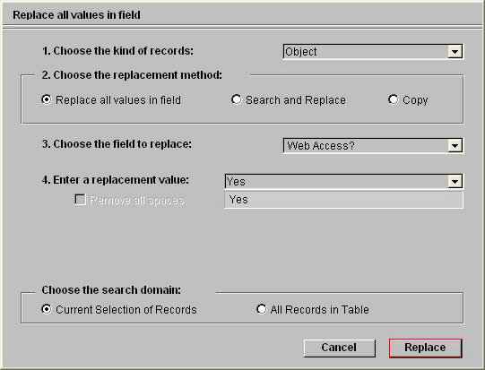
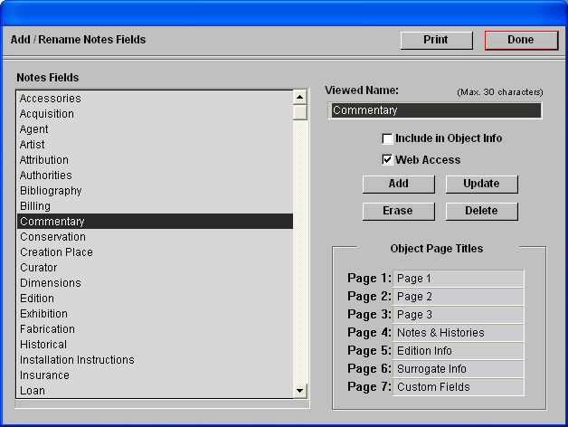
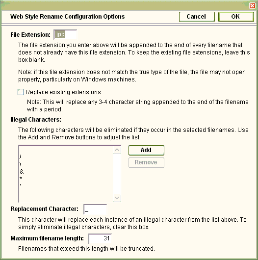
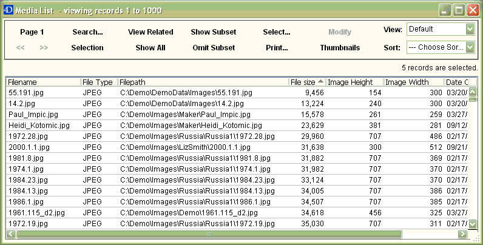
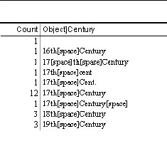
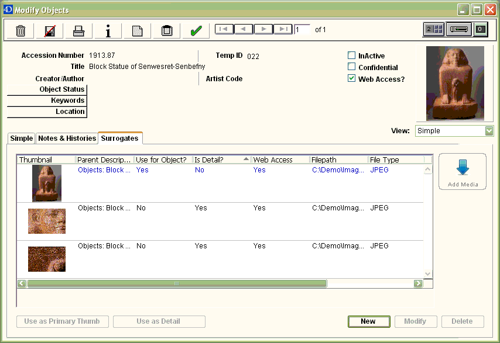
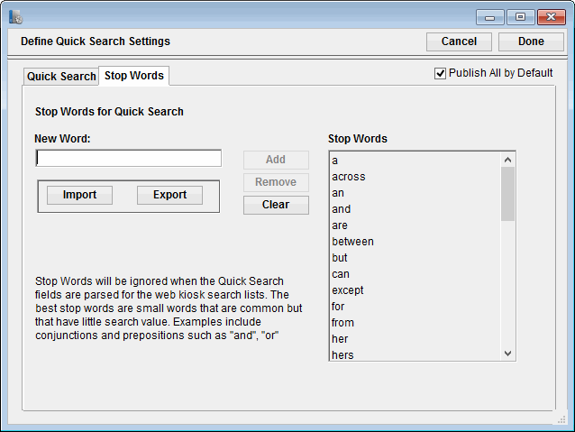
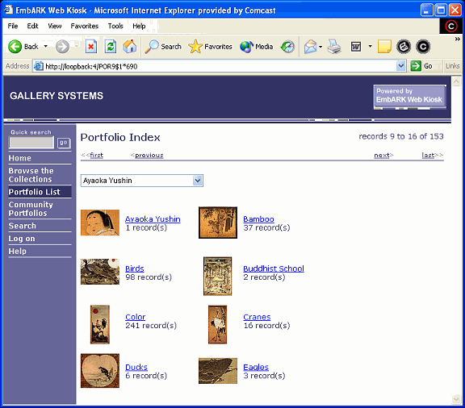
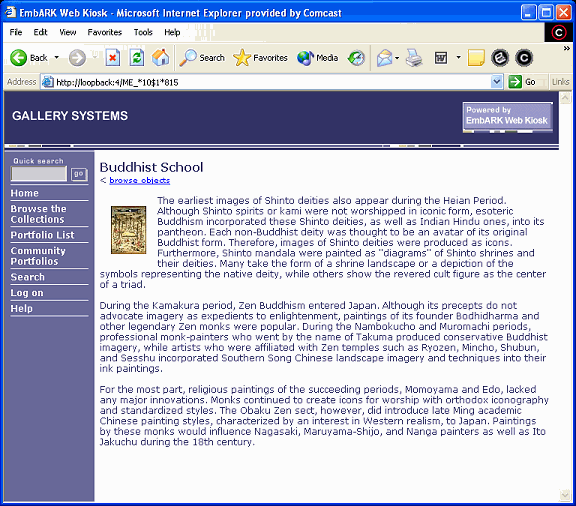
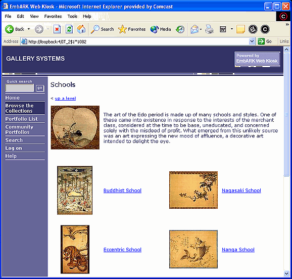

Preparing the Database
Publishing Records |
Preparing Media Files |
Cataloguing Data |
Kiosk Setup |
Organizing Records
To appear in the kiosk, records must be flagged for web access and images must be in a format accepted by web browsers. In addition, the more thorough and consistent your data is, the more useful your kiosk will be.
This section explains how to accomplish these tasks within EmbARK before setting up the kiosk, with chapter references to the EmbARK documentation.
Publishing Records
You will create (and update) the data in your EmbARK Web Kiosk by copying the latest version of your entire EmbARK datafile to the web server. Because you may not want all of your records to be available for public viewing, strict controls limit which records display in the kiosk.
- An Object record displays only if its 'Web Access' box has been checked.
- An Artist record displays only if its 'Web Access' box has been checked.
- A Portfolio record displays only if its 'Web Access' box has been checked.
- An Object's Primary Image displays only if the 'Web Access' checkbox for its Primary Surrogate has been checked.
- An Object's Surrogate records display only if the 'Web Access' box has been checked for the linked Surrogates.
- An Object's Detail records [Deprecated] display only if the 'Web Access' box has been checked for the related Surrogates and the Surrogate is marked as a Detail.
- An Artist's Surrogate records display only if the 'Web Access' box has been checked for the linked Surrogates.
- An Object Note displays only if 'Web Access' has been turned on for the appropriate Note field in Setup and the 'Web Access' box has been checked for the linked Object.
The following sections describe how to set these 'Web Access' flags.
Flagging Individual Records for Web Access
To display any objects, artists, surrogates, portfolios, or object notes on the kiosk, you must select the Web Access checkbox associated with each record in EmbARK.
This checkbox is found in the following locations:
- Objects - in the header of the Modify Object forms.
- Artists - in the header of the Modify Artist forms.
- Surrogates - in the header of the Modify Surrogate forms.
- Portfolios - in the Portfolio Attributes dialog box.
[Choose Attributes from the Portfolio menu; see Chapter 16 of the EmbARK User’s Guide for more information.]
- Object Notes - in the Notes Setup dialog box.
[See Object Notes below.]
Notes
- A portfolio can only be designated for web access if all of the objects it contains are also designated for such access.
- The Publish All by Default setting located at File -> Setup -> Quick Search will automatically mark all new Object, Artist and Surrogate records as web-accessible.
|
Flagging Groups of Records for Web Access
The Replace feature in EmbARK enables you to mark large groups of records for Web Access in a batch process. This is particularly useful in cases where the entire collection should always be published, for example on an intranet site.
These directions describe how to use the Replace feature for setting Web Access flags.
- In EmbARK, select the Object records that you want to flag for Web Access.
- Choose Replace from the Utilities menu.
The EmbARK Replace dialog box appears.

- In "1. Choose the kind of records", verify that "Object" is selected.
- In "2. Choose the replacement method", select the "Replace all values in field" radio button.
- In "3. Choose the field to replace", choose "Web Access?".
- In the drop-down list for "4. Enter a replacement value", select "Yes" as the replacement value.
- In the "Choose the search domain" box, select the radio button for Current Selection of Records.
If you want to mark the entire database for web access, choose "All Records in Table".
- Click the Replace button.
EmbARK will mark every selected object for web access. It will automatically ask if you wish to make the same change for the Image Web Access field (if the status is changed).
- Repeat as appropriate Artist, Surrogate, and Portfolio records.
Notes
- You must have specific permission in order to use the Replace feature. For more information, consult your system administrator or see the online documentation in the EmbARK Support Center.
|
Object Notes
If you have system administrator privileges, you can mark long-text Notes fields (from the Notes & Histories page) in all web-accessible object records for web access by following these steps:
- Choose Setup from the File menu.
The System Administrator Setup dialog box appears.
- Click the Notes Fields button.
The Add/Rename Notes Fields dialog box appears.

- Select a Notes field from the column on the left.
The attributes for that field are displayed on the right.
- Click to put a check in the Web Access checkbox, then click Update.
- Repeat steps 3 and 4 for each Notes field that you want displayed.
- When you are finished, click Done to exit.
In a standard kiosk, any Notes fields marked for web access will appear on the Object Info page for the object that they describe.
|
|
Preparing Media Files
The kiosk can display surrogate images linked to Object and Artist records. These images, however, will only display if their file format is readable by web browsers and their names and location conform to internet standards.
What File Format Should I Use?
Images in the JPEG format (with a file extension of .jpg) are the easiest for web browsers to display. In addition, your kiosk images will be displayed to visitors more quickly if you compress them to a smaller file size. Web Kiosk can also publish sound and movie files (such as .MP3 and .MP4).
Thumbnails and previews will display in the kiosk, regardless of the file format of the original source image.
|
Converting Image Filenames
If your images are already in a format that web browsers can display but the names of the files are not web-compatible (for example, they contain spaces, or are Macintosh files without extensions), use the EmbARK cataloguing application to follow the steps below.
- Search for the image files whose names you want to change.
For example, to find all images that contain spaces, go to Full Search in the Selection menu. Search for (1) SURROGATE records where (2) the Surrogate: Web Access field is equal to "yes".
- When the search results are displayed, click the View Related button to load the associated Media records and their metadata.
- Select all of the Media records that require a change (e.g. illegal characters, no file extension, etc.).
Note: If the image files are in incompatible formats (such as TIFF or BMP), you will have to use an application such as Photoshop to create compatible formats.
- Click the button that says Thumbnails to load a thumbnail view.
- Click the Rename button in the left button bar.
The Rename dialog box appears, with the original image filenames on the left and a separate list for entering new names on the right. (Images can only be renamed if they are online. To quickly select online images before doing the Rename, click the Select... button and choose ONLINE. Online records will be highlighted with a red outline.)
- Click the Web Style button.
A configuration dialog opens.
- Enter the appropriate file extension (for example, ".jpg" for JPEG files).
- The Illegal Characters list specifies which characters will get replaced with the replacement character (typically an underscore). Modify this as needed.
- Click Done to close the dialog.
The filenames listed on the right will be converted to web-compatible names (with file extensions, and illegal characters replaced; for example, "My Image" might become "My_Image.jpg"), and the corresponding image files will be renamed.
- Repeat this process for any additional groups of images.

Notes
- On some Macintosh systems, image filenames may not be longer than 27 characters. If there are more than 27 characters, EmbARK may not be able to correct the image filename and still provide a unique filename. If this occurs, an error log will appear listing the filenames that could not be changed.
|
Image Location
Follow these guidelines for organizing images to be included in the EmbARK Web Kiosk.
- All your images must be stored within a single folder called Images.
- The Images folder name must appear in the file paths that are stored in EmbARK. On networked Windows machines, this means that a folder above the Images folder must be mapped to a local drive. This ensures that the image path is stored as I:\Images\myPicture.gif (for example). If the Images folder itself is mapped to a drive letter, the image path in EmbARK will read I:\myPicture.gif, and images will not load correctly in the kiosk.
- You can create as many subfolders as you wish inside the Images folder, but do not include the word "Images" in the name of any of these subfolders.
- The folder or subfolder names must not contain any spaces or other characters that web browsers cannot interpret (for example, use My_Folder instead of My Folder).
- It is possible to configure the Images directory so that it may be shared by both EmbARK and EmbARK Web Kiosk. The Images folder must be within the EmbARK Web Kiosk directory or on some other web server space. This configuration eliminates the need to have two copies of your source images. IIS may be used to create a virtual directory. The Media Directory URL can be set to point to the virtual directory.

This graphic shows a Media List with valid Windows file paths containing the required "images" folder.
|
|
Cataloguing Data
The kiosk lets visitors search your collection based on "Advanced Search" fields from the Object and Artist records, the Object Creation Date, Keywords, and additional Object fields with the "Quick Search".
For the Advanced Search and keyword searches to work effectively, you must catalog the objects in the collection as thoroughly and consistently as possible. This helps to ensure that potential search results are not "missed" because the data entry for an object was incomplete or did not match entries for similar objects.
Advanced Search Fields
On the Advanced Search page, visitors are presented with popups for selecting a field to search. Once they select a field, they are presented with a popup of every value entered in that field for web accessible records. If the selected field contains a large number of unique values, the visitor must first select a beginning letter, then choose from values that begin with that letter.
Because the user is presented with value lists, the Advanced Search is most useful for fields where the same value has been used for many records. This both ensures a succinct value list and gives the visitor more satisfying search results.
Consistent data entry is critical for creating an effective Advanced Search. The best way to guarantee consistent data entry in these fields is to set up Choice Lists for them early in the data entry process. [See Chapter 2 of the EmbARK User’s Guide.]
One of the early steps for setting up an EmbARK Web Kiosk is to determine which fields should be used as "Advanced Search Fields". The Object Advanced Search section details how to configure these fields.
Once the Advanced Search fields have been selected, it's worthwhile to take a few minutes to review the data that has been entered in these fields, and clean it up if necessary.
In EmbARK, you can use the Unique Values report to make sure that the data entered in your Advanced Search fields is consistent, and the Replace feature to standardize the data in any fields where you find inconsistent data. To do this, follow these steps:
- In EmbARK, choose Tools from the Utilities menu (start at the splash screen view).
The Tools dialog box appears.
- Select the Unique Values Report option, then click OK.
A field selection dialog box appears.
- Choose the table and the field whose data you want to review, then click OK.
A report showing all of the values entered in the field you chose is printed automatically. In the report, spaces in any value will be replaced by the text "[SPACE]" so that you can easily identify incorrect or inconsistent spacing.

- Review the displayed values and note any inconsistencies.
For example, if the Century field contains both "17th Century" and "17th Cent." as values, this is an inconsistency that should be fixed.
- Choose Replace from the Utilities menu.
The Replace dialog box appears.
- In lines 1 and 3, choose a table and field with inconsistent data.
For example, to fix the inconsistency mentioned in step 4, you would choose Object in line 1 and Century in line 3.
- In line 4, type the inconsistent text that you want to change (for example, "17th Cent.").
- In line 5, type the text that you want to use as the consistent text for this value (for example, "17th Century").
- Click Replace.
EmbARK will change all values matching the text in line 4 to match the text in line 5. (For example, "17th Cent." will be changed to "17th Century".)
Notes
- The best Advanced Search fields are those where the same value applies to several records (for example, Medium or Object Type) rather than fields where the information for each record is likely to be unique (for example, Display Title or Accession Number).
- If you do need to let kiosk visitors search for objects by using a field with many unique values (such as Display Title), you can help them by designating the field for use in the Quick Search, which looks for partial information (for example, any object with "Mask" in the title). [See Choosing Fields for the Quick Search for details.]
|
Keywords
Kiosk visitors can also search your collection by keyword.
Through the kiosk they can run searches to find keyword terms that have been used on web accessible Objects in EmbARK. This includes each component of hierarchical keywords such as animals:dogs:hounds:basset. They can then select up to 6 of these words to find related Objects.
[See Chapters 12 and 14 of the EmbARK User's Guide for details about cataloguing with keywords.]
The more thoroughly you have used keywords to describe your collection, the more useful these searches will be. In fact, because some kiosk users may prefer keyword searches to field-based searches, you may wish to enter the values used in one or more of your Quick Search fields (for example, Medium) as keywords. Similarly, you might enter values from fields that are not included in the Quick Search list as keywords, in order to offer users an indirect way to search your kiosk based on the information in those fields.
|
Surrogate Records and Images
EmbARK allows you to attach multiple media files to an object through the use of Surrogates. Surrogates allow for the display of detailed information about the image using fields from the Surrogate record. From the Object "Description" web page, the kiosk visitor can click into a page of all the web accessible Surrogates linked to the object (or the surrogates can be viewed as "Additional Images" on the same page).
Movie, sound, PDF and other web-compatible file types may also be marked for display.

|
Detail Images [Deprecated]
EmbARK allows you to display multiple media files for an object through the use of Details. In fact, details are merely surrogate records that have been given a special flag (and there is little reason to use them). From the Object "Description" web page, the kiosk visitor can click into a page of all the details linked to the object.
The default label for each detail is the image filename. To change the caption value, simply adjust the value in the View field in the Modify Surrogate record.
If the Details screen is loaded in EmbARK, you may use drag-and-drop to manually adjust the display order of the Detail images.
|
|
Quick Search Setup
Quick Search Setup (previously called Kiosk Setup) contains a few legacy controls that impact searching in Web Kiosk. Most of these controls are now available in Preferences. To display the Quick Search Setup dialog box:
- Choose Setup from the File menu.
The Setup dialog opens.
- Click the Quick Search button.
The Quick Search button provides an interface to select the fields that will be indexed for EmbARK's internal Quick Search function (in the Find search). If Stop Words are entered, both EmbARK and Web Kiosk will make use of these values.
Stop Words
Eliminating small words (such as a and the) from consideration makes the Quick Search more efficient. Click the Stop Words tab in the Quick Search Setup dialog box to choose the words to ignore (known as stop words).

Stop words may be imported from a plain text file. To import a list:
- Click the Import button.
A file selection dialog opens.
- Find and select the text file.
Once imported, the stop words will be listed on the right side of the Stop Words tab.
To add a word to the list, type it in the New Word box, then click Add.
To remove an existing stop word, select it in the list, then click Remove. (Note that you cannot edit words that are already in the list; if a stop word is misspelled, remove it and then add the correct word.)
|
|
Organizing Records
In addition to letting visitors search for records, the EmbARK Web Kiosk provides two ways for you to organize records for browsing. These provide a means for organizing your collection or guiding a visitor through the highlights.
Portfolios (aka Portfolio List)
The portfolios that you create in EmbARK can be made available in the kiosk. The Portfolio Index page in the kiosk presents visitors with an alphabetical list of all web accessible portfolios from the datafile. Clicking a portfolio name opens a page of thumbnail images and field information for the objects included in that portfolio.

To enhance the effectiveness of your kiosk portfolios:
- Attach a representative image to each portfolio.
- Enter general information about the Object grouping in the Portfolio Notes field in the Portfolio Attributes dialog box. Visitors will be able to see this text by clicking the Notes button on a kiosk portfolio page.

[For more information on creating portfolios in EmbARK and attaching representative images, see Chapter 16 of the EmbARK User’s Guide and Chapter 3 of the EmbARK Public Access Guide.]
Notes
- Web accessible Portfolios whose names begin with "<!-- -->" will not display in the standard Portfolio Index in EmbARK. This is a trick that some EmbARK clients use for including portfolios in the Index Tree (Browse the Collections) without including them in the Portfolio Index.
- Certain types of data sets may be too tedious to maintain as portfolios. Consider using Dynamic Portfolios based on key data fields to load logical data sets.
|
Index Tree (aka Browse the Collections)
The Index Tree of the kiosk is a series of paths (or branches) that you design for your collection, along any organizational guidelines you prefer. Each path may lead in turn to additional levels of branches.
Each branch may have descriptive text and an image associated with it. At the end of each pathway, the user will be linked to either a portfolio of thumbnail records or simply a page with descriptive text information.

Before you can link a portfolio to the Index Tree, you must mark that portfolio for web access. As a result, every portfolio that is linked to the Index Tree will also be listed in the Portfolio Index. To mark a portfolio for web access but exclude it from the Portfolio Index, you must begin the Portfolio Name with the text "<!-- -->" (without quotation marks).
Notes
- "Portfolio Index" portfolios will also display in the popup on the Collections pages of the live web kiosk.
- Before portfolios can be used in the Index Tree, they must be marked as web accessible. [See Publishing Records for details.]
|
|
|